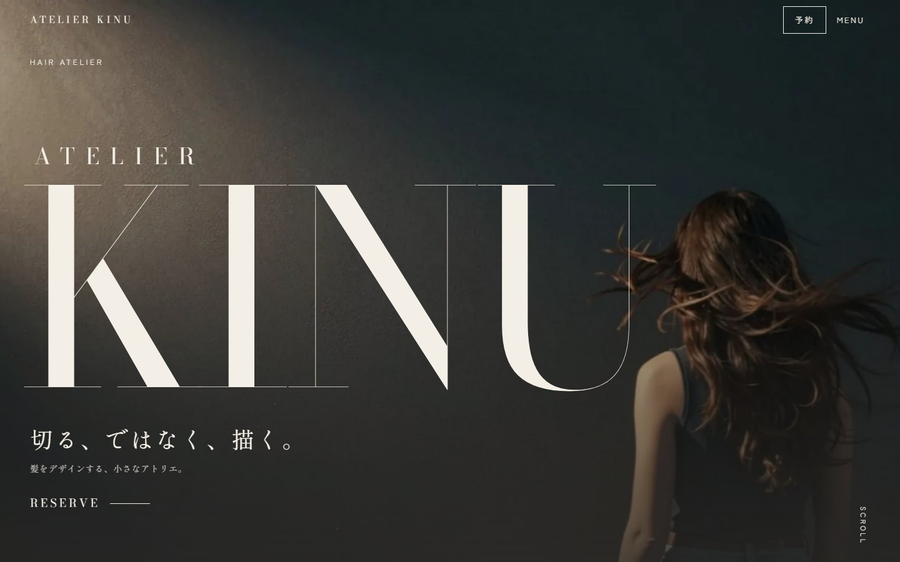
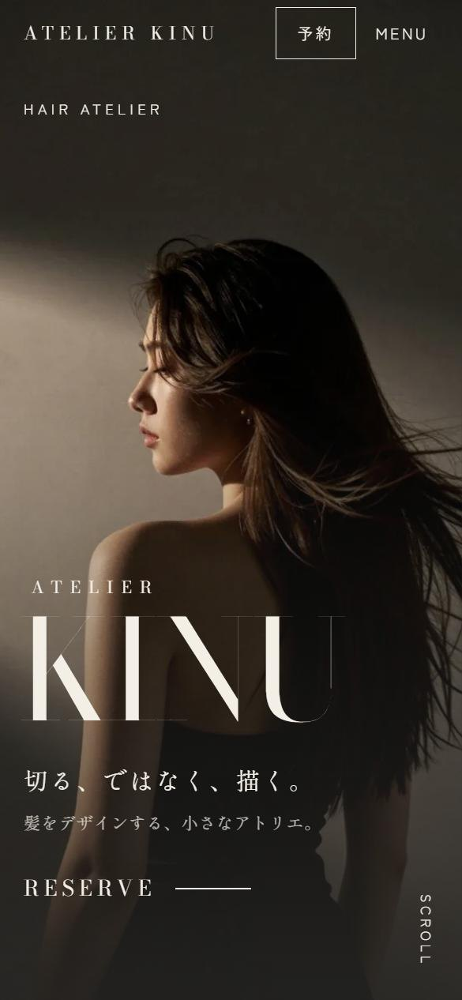

髪をデザインするアトリエ ATELIER KINU
「美容室というより、髪をデザインするアトリエ」をコンセプトにした店舗サイト。ベージュの石とオーク、黒いスチールの店内に合わせて、ファッション誌のような大きな文字と、映画のオープニングのような表紙でまとめました。最後は予約したくなる流れを意識しています。
- ページ
- 1ページ（表紙・コンセプト・スタイル・髪の診断・スタイリスト・メニュー料金・サロン・予約）
- デザイン
- 巨大な欧文の見出しと余白 / 縦長のスタイル写真を左右にずらして配置 / 診断の結果がそのまま予約フォームに入る導線 / 外観から店内まで世界観をそろえた店内写真
- 動き
- 写真が闇から現れ文字が順に出る表紙 / 次の場面が覆いかぶさる切り替え / 丸く広がる全画面メニュー / 写真が開くスタイル一覧（動きを減らす設定にも対応）